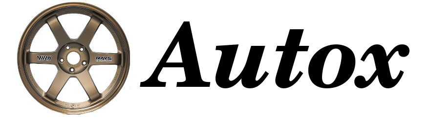
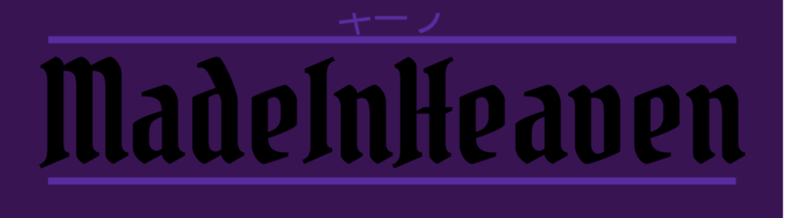

Projects
Main
Contact
^^^
DebatOX
AutOX
DuoRide
DebatOX was a group project carried out by 3 people.
I was the graphic designer and the host of the website.
The project enhances the experience of Oxford debates.
The program was written in C# with unity.

Autox was a part of an Internship at GlobalLogic.
The idea was to explore the topic of
modern cars subsystems communication.
All code is availabile on github.

DuoRide is a project for your car.
The purpuse of the project is to
bring some fun to your car, by letting it talk.
The project is power by a Raspberry pi 4b+.